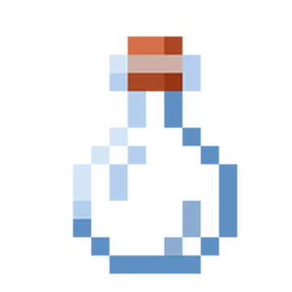
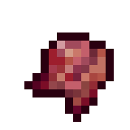
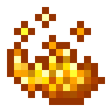
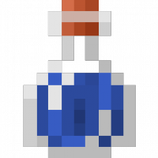
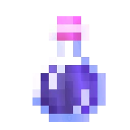

Description
-Thick potion as known as the "Potion of Weakness" is created by brewing an Awkward Potion with a Fermented Spider Eye.
-Thick potions have a more viscous texture and are used for different effects compared to standard potions. In the case of the Potion of Weakness, it reduces the damage dealt by a player's melee attacks and is often used for purposes like curing zombie villagers.
Ingredients
To make Thick Potion, You will need:
-

Water Bottle
You will need empty glass bottles, which you can obtain by right-clicking on a water source or by using glass bottles in your crafting grid.
-

Nether Wart
Nether Wart is a plant that can be found in the Nether dimension. You'll need to gather Nether Wart, which can be farmed in the Overworld with soul sand, or you can find it in Nether Fortresses in the Nether dimension.
-

Fermented Spider Eye
To make it into a thick Potion
-

Blaze Powder
Blaze Powder is used as fuel for the Brewing Stand.
-

Redstone Dust
This is used to extend the duration of your potion.
-

Brewing Stand
You'll need a Brewing Stand to create and modify potions.
Steps
Follow the Following Steps to Make Thick Potion:
-

Create Awkward Potion
-Start by placing Blaze Powder in the fuel slot of a Brewing Stand to activate it.
-Add Water Bottles to the three bottle slots in the Brewing Stand to create Awkward Potions.
-Place Nether Wart in the top slot of the Brewing Stand to create an Awkward Potion. -

Create Potion of Weakness
-Add Blaze Powder to the Brewing Stand again.
-Put Fermented Spider Eye in the top slot. This will transform the Awkward Potion into a Potion of Weakness. -
Access a Brewing Stand
Place your brewing stand down somewhere in your world. You can craft a brewing stand using a blaze rod and three cobblestones. Then, right-click on the brewing stand to open its interface.
-
Add Fermented Spider Eye
Finally, add a Fermented Spider Eye to the Potion of Weakness to make it into a thick Potion of Weakness.